Spectra() can be plotted with one of the following functions
plotSpectra: plots each spectrum in its separate plot by splitting the plot area into as many panels as there are spectra.plotSpectraOverlay: plots all spectra inxinto the same plot (as an overlay).plotSpectraMirror: plots a pair of spectra as a mirror plot. Parametersxandyboth have to be aSpectraof length 1. Matching peaks (consideringppmandtolerance) are highlighted. Seecommon()for details on peak matching. ParametersmatchCol,matchLty,matchLwdandmatchPchallow to customize how matching peaks are indicated.
Usage
plotSpectra(
x,
xlab = "m/z",
ylab = "intensity",
type = "h",
xlim = numeric(),
ylim = numeric(),
main = character(),
col = "#00000080",
labels = character(),
labelCex = 1,
labelSrt = 0,
labelAdj = NULL,
labelPos = NULL,
labelOffset = 0.5,
labelCol = "#00000080",
asp = 1,
...
)
plotSpectraOverlay(
x,
xlab = "m/z",
ylab = "intensity",
type = "h",
xlim = numeric(),
ylim = numeric(),
main = paste(length(x), "spectra"),
col = "#00000080",
labels = character(),
labelCex = 1,
labelSrt = 0,
labelAdj = NULL,
labelPos = NULL,
labelOffset = 0.5,
labelCol = "#00000080",
axes = TRUE,
frame.plot = axes,
...
)
# S4 method for Spectra
plotSpectraMirror(
x,
y,
xlab = "m/z",
ylab = "intensity",
type = "h",
xlim = numeric(),
ylim = numeric(),
main = character(),
col = "#00000080",
labels = character(),
labelCex = 1,
labelSrt = 0,
labelAdj = NULL,
labelPos = NULL,
labelOffset = 0.5,
labelCol = "#00000080",
axes = TRUE,
frame.plot = axes,
ppm = 20,
tolerance = 0,
matchCol = "#80B1D3",
matchLwd = 1,
matchLty = 1,
matchPch = 16,
...
)Arguments
- x
a
Spectra()object. ForplotSpectraMirrorit has to be an object of length 2.- xlab
character(1)with the label for the x-axis (by defaultxlab = "m/z").- ylab
character(1)with the label for the y-axis (by defaultylab = "intensity").- type
character(1)specifying the type of plot. Seeplot.default()for details. Defaults totype = "h"which draws each peak as a line.- xlim
numeric(2)defining the x-axis limits. The range of m/z values are used by default.- ylim
numeric(2)defining the y-axis limits. The range of intensity values are used by default.- main
character(1)with the title for the plot. By default the spectrum's MS level and retention time (in seconds) is used.- col
color to be used to draw the peaks. Should be either of length 1, or equal to the number of spectra (to plot each spectrum in a different color) or be a
listwith colors for each individual peak in each spectrum.- labels
allows to specify a label for each peak. Can be a
characterwith length equal to the number of peaks, or, ideally, afunctionthat uses one of theSpectra's variables (see examples below).plotSpectraMirrorsupports onlylabelsof type function.- labelCex
numeric(1)giving the amount by which the text should be magnified relative to the default. See parametercexinpar().- labelSrt
numeric(1)defining the rotation of the label. See parametersrtintext().- labelAdj
see parameter
adjintext().- labelPos
see parameter
posintext().- labelOffset
see parameter
offsetintext().- labelCol
color for the label(s).
- asp
for
plotSpectra: the target ratio (columns / rows) when plotting mutliple spectra (e.g. for 20 spectra useasp = 4/5for 4 columns and 5 rows orasp = 5/4for 5 columns and 4 rows; seegrDevices::n2mfrow()for details).- ...
additional parameters to be passed to the
plot.default()function.- axes
logical(1)whether (x and y) axes should be drawn.- frame.plot
logical(1)whether a box should be drawn around the plotting area.- y
for
plotSpectraMirror:Spectraobject of length 1 against whichxshould be plotted against.- ppm
for
plotSpectraMirror: m/z relative acceptable difference (in ppm) for peaks to be considered matching (seecommon()for more details).- tolerance
for
plotSpectraMirror: absolute acceptable difference of m/z values for peaks to be considered matching (seecommon()for more details).- matchCol
for
plotSpectraMirror: color for matching peaks.- matchLwd
for
plotSpectraMirror: line width (lwd) to draw matching peaks. Seepar()for more details.- matchLty
for
plotSpectraMirror: line type (lty) to draw matching peaks. Seepar()for more details.- matchPch
for
plotSpectraMirror: point character (pch) to label matching peaks. Defaults tomatchPch = 16, set tomatchPch = NAto disable. Seepar()for more details.
Examples
ints <- list(c(4.3412, 12, 8, 34, 23.4),
c(8, 25, 16, 32))
mzs <- list(c(13.453421, 43.433122, 46.6653553, 129.111212, 322.24432),
c(13.452, 43.5122, 129.112, 322.245))
df <- DataFrame(msLevel = c(1L, 1L), rtime = c(123.12, 124))
df$mz <- mzs
df$intensity <- ints
sp <- Spectra(df)
#### --------------------------------------------- ####
## plotSpectra ##
## Plot one spectrum.
plotSpectra(sp[1])
## Plot both spectra.
plotSpectra(sp)
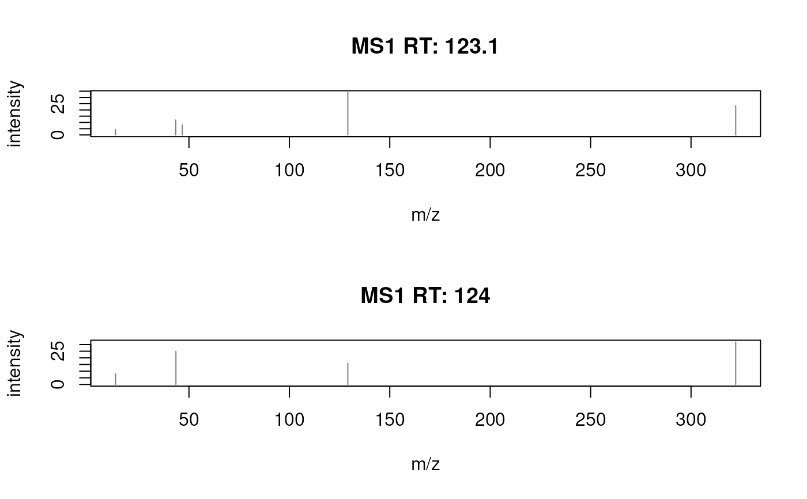
## Define a color for each peak in each spectrum.
plotSpectra(sp, col = list(c(1, 2, 3, 4, 5), 1:4))
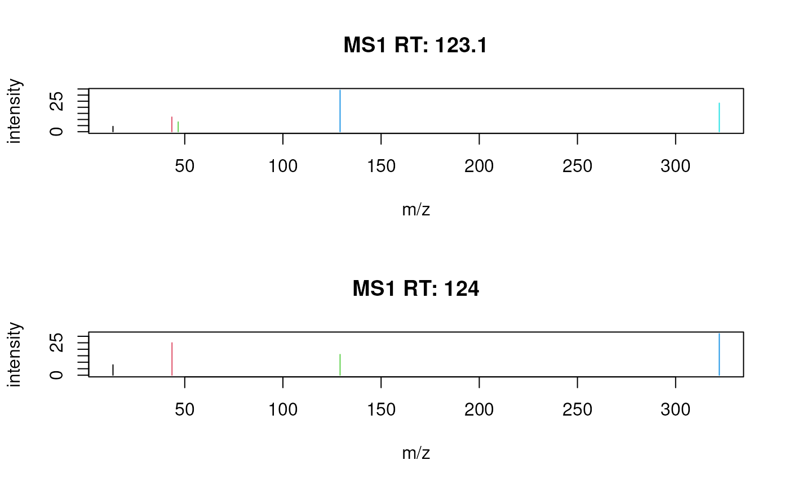
## Color peaks from each spectrum in different colors.
plotSpectra(sp, col = c("green", "blue"))
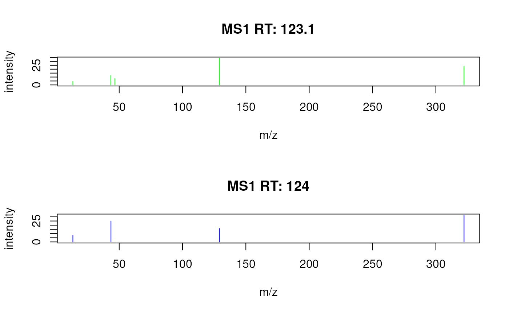
## Label each peak with its m/z.
plotSpectra(sp, labels = function(z) format(unlist(mz(z)), digits = 4))
 ## Rotate the labels.
plotSpectra(sp, labels = function(z) format(unlist(mz(z)), digits = 4),
labelPos = 2, labelOffset = 0.1, labelSrt = -30)
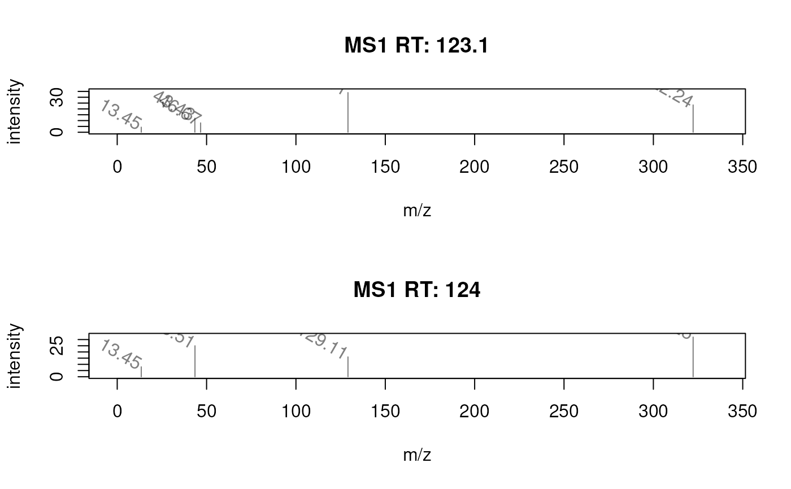
## Add a custom annotation for each peak.
sp$label <- list(c("", "A", "B", "C", "D"),
c("Frodo", "Bilbo", "Peregrin", "Samwise"))
## Plot each peak in a different color
plotSpectra(sp, labels = function(z) unlist(z$label),
col = list(1:5, 1:4))
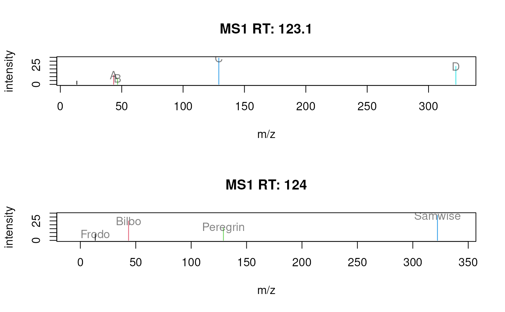
## Plot a single spectrum specifying the label.
plotSpectra(sp[2], labels = c("A", "B", "C", "D"))
#### --------------------------------------------- ####
## plotSpectraOverlay ##
## Plot both spectra overlaying.
plotSpectraOverlay(sp)
## Rotate the labels.
plotSpectra(sp, labels = function(z) format(unlist(mz(z)), digits = 4),
labelPos = 2, labelOffset = 0.1, labelSrt = -30)
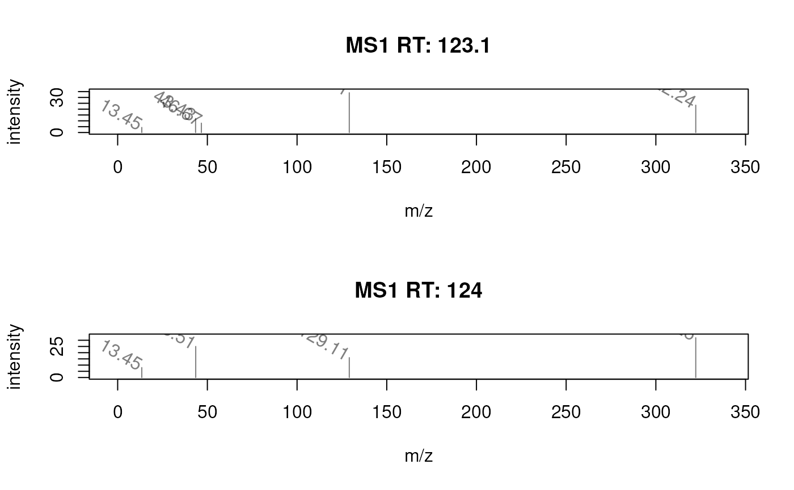
## Add a custom annotation for each peak.
sp$label <- list(c("", "A", "B", "C", "D"),
c("Frodo", "Bilbo", "Peregrin", "Samwise"))
## Plot each peak in a different color
plotSpectra(sp, labels = function(z) unlist(z$label),
col = list(1:5, 1:4))
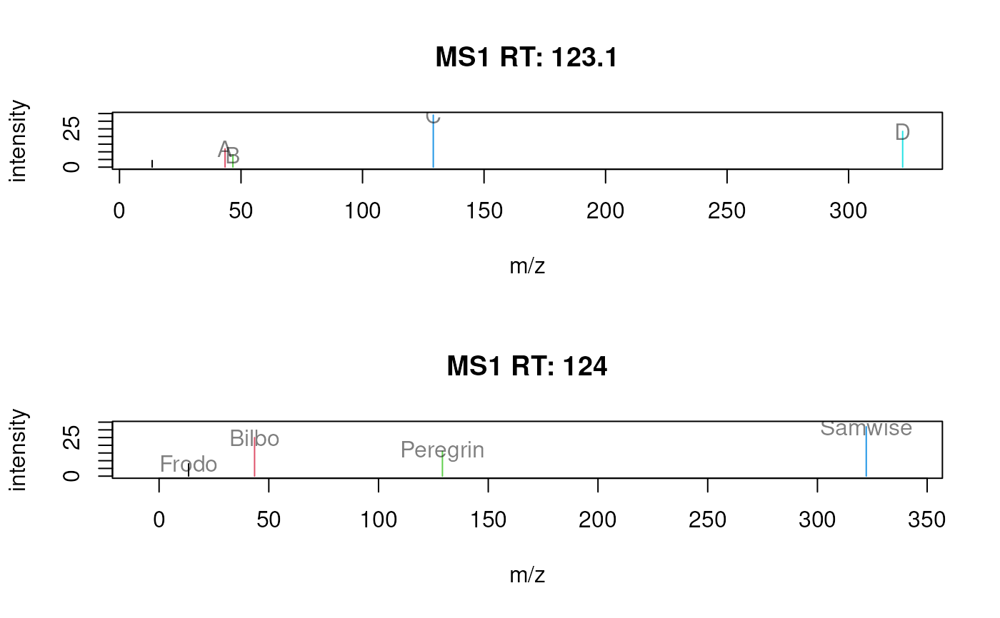
## Plot a single spectrum specifying the label.
plotSpectra(sp[2], labels = c("A", "B", "C", "D"))
#### --------------------------------------------- ####
## plotSpectraOverlay ##
## Plot both spectra overlaying.
plotSpectraOverlay(sp)
 ## Use a different color for each spectrum.
plotSpectraOverlay(sp, col = c("#ff000080", "#0000ff80"))
## Label also the peaks with their m/z if their intensity is above 15.
plotSpectraOverlay(sp, col = c("#ff000080", "#0000ff80"),
labels = function(z) {
lbls <- format(mz(z)[[1L]], digits = 4)
lbls[intensity(z)[[1L]] <= 15] <- ""
lbls
})
abline(h = 15, lty = 2)
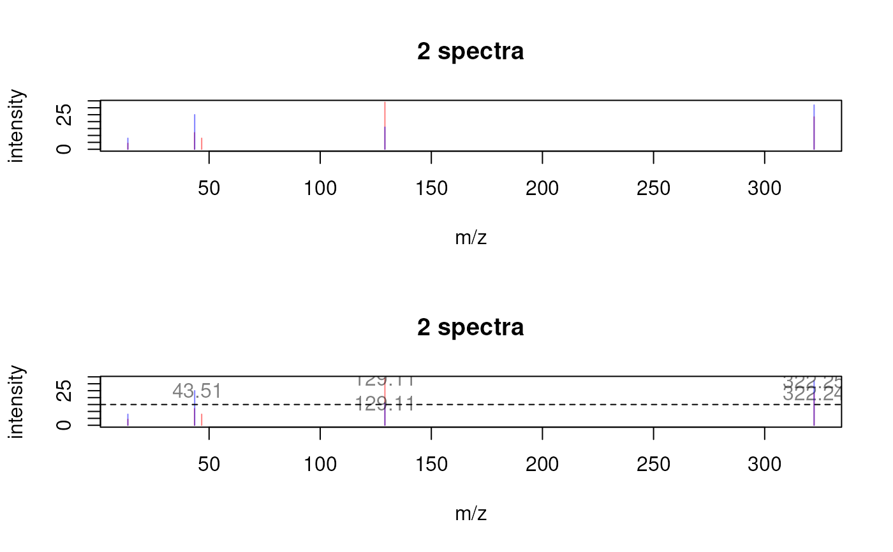
## Use different asp values
plotSpectra(sp, asp = 1/2)
plotSpectra(sp, asp = 2/1)
## Use a different color for each spectrum.
plotSpectraOverlay(sp, col = c("#ff000080", "#0000ff80"))
## Label also the peaks with their m/z if their intensity is above 15.
plotSpectraOverlay(sp, col = c("#ff000080", "#0000ff80"),
labels = function(z) {
lbls <- format(mz(z)[[1L]], digits = 4)
lbls[intensity(z)[[1L]] <= 15] <- ""
lbls
})
abline(h = 15, lty = 2)
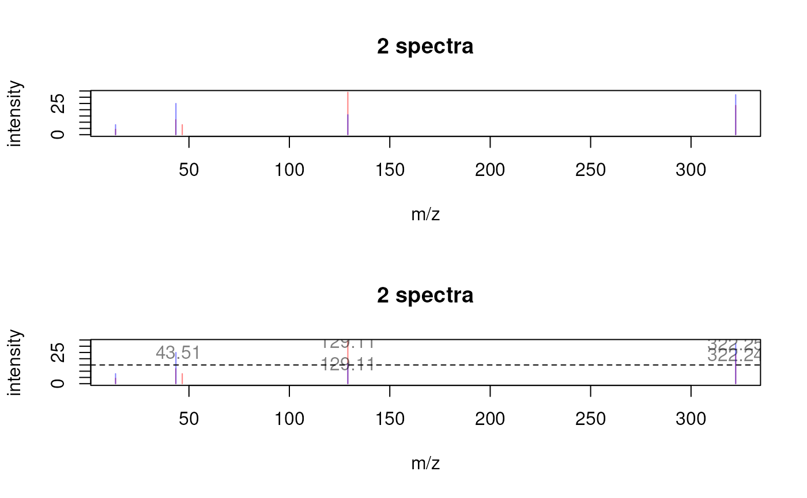
## Use different asp values
plotSpectra(sp, asp = 1/2)
plotSpectra(sp, asp = 2/1)
 #### --------------------------------------------- ####
## plotSpectraMirror ##
## Plot two spectra against each other.
plotSpectraMirror(sp[1], sp[2])
## Label the peaks with their m/z
plotSpectraMirror(sp[1], sp[2],
labels = function(z) format(mz(z)[[1L]], digits = 3),
labelSrt = -30, labelPos = 2, labelOffset = 0.2)
grid()
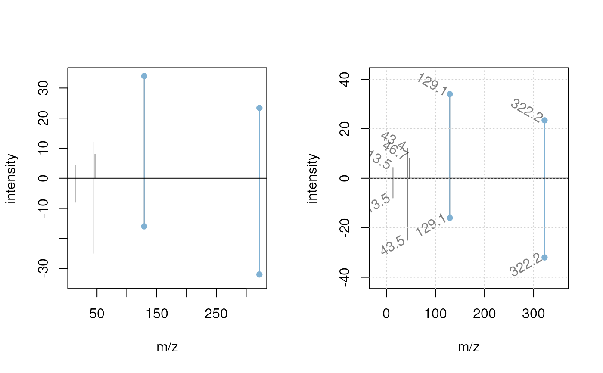
## The same plot with a tolerance of 0.1 and using a different color to
## highlight matching peaks
plotSpectraMirror(sp[1], sp[2],
labels = function(z) format(mz(z)[[1L]], digits = 3),
labelSrt = -30, labelPos = 2, labelOffset = 0.2, tolerance = 0.1,
matchCol = "#ff000080", matchLwd = 2)
grid()
#### --------------------------------------------- ####
## plotSpectraMirror ##
## Plot two spectra against each other.
plotSpectraMirror(sp[1], sp[2])
## Label the peaks with their m/z
plotSpectraMirror(sp[1], sp[2],
labels = function(z) format(mz(z)[[1L]], digits = 3),
labelSrt = -30, labelPos = 2, labelOffset = 0.2)
grid()
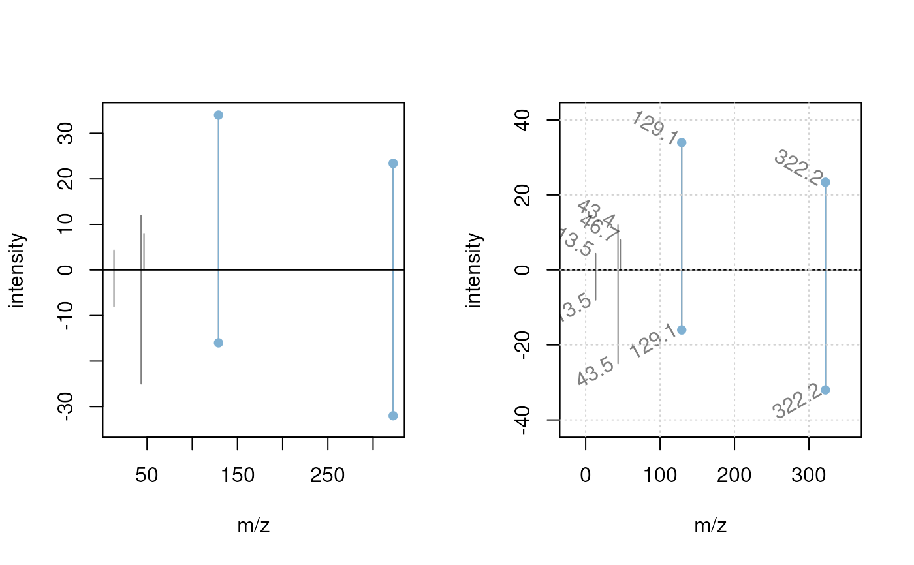
## The same plot with a tolerance of 0.1 and using a different color to
## highlight matching peaks
plotSpectraMirror(sp[1], sp[2],
labels = function(z) format(mz(z)[[1L]], digits = 3),
labelSrt = -30, labelPos = 2, labelOffset = 0.2, tolerance = 0.1,
matchCol = "#ff000080", matchLwd = 2)
grid()